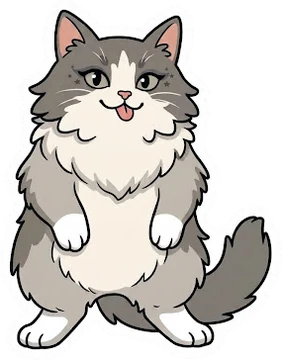
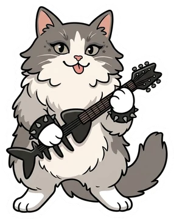
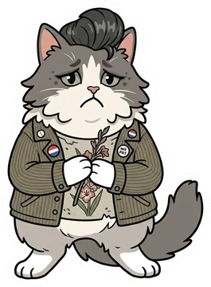
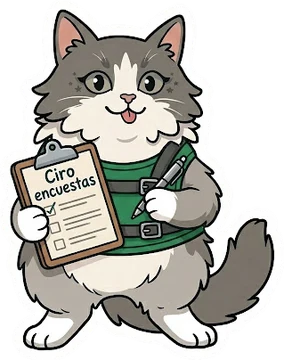
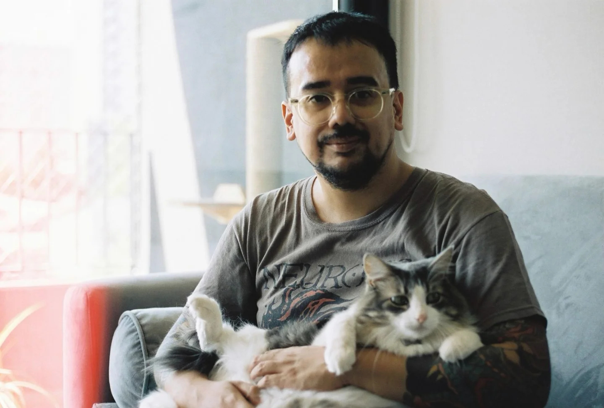

🎧 Mi vida en canciones
Más de una década de música registrada en Last.fm, contada con datos.

Reporte general
Toda la historia desde 2013: géneros, eras, ánimo, personalidad de oyente, letras y un laboratorio de técnicas de clasificación.

Reporte del mes
Lo mejor del último mes y qué tan distinto fue a lo habitual. Se actualiza solo el día 1 de cada mes.

Cómo está hecho
De dónde salen los datos, cómo se procesan y qué hace cada técnica, explicado en simple y en detalle.
Sobre mí

Joaquín Galdames · Sociólogo y Magíster en Métodos para la Investigación Social · Santiago, Chile
Trabajo hace más de diez años en investigación social y cinco en producción estadística oficial en el Instituto Nacional de Estadísticas (INE), donde he participado en el Censo 2024, la II ENUT y la Encuesta de Microemprendimiento.
Mi herramienta principal es R. Este proyecto junta dos cosas que me gustan: los datos y la música. Es un ejercicio para mirar con método algo tan cotidiano como lo que escucho.
Ver mi LinkedIn ↗